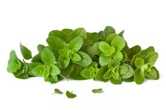

Orégano
Postado em 2016-06-21

Cuidados de Cultivo:
Devem estar num local protegido e ensolarado. Esta planta não gosta de muita água, ou seja só deve ser regado quando o solo estiver muito seco.
Temperatura aconselhável para esta planta:
Temperatura Ideal:
Os orégãos requerem temperaturas acima dos 5°C.